"Yedi Gök" tabiri 7 kere geçer. "Göklerin yaratýlýþý (halku semavat)" ifadesi de 7 kere tekrarlanýr.
Kuran'ýn þimdiye dek incelediðimiz mucizevi özelliklerinin dýþýnda bir de "matematiksel mucize"si vardýr. Bu mucizeye bir örnek, Kuran'daki bazý kelime tekrarlarýnýn verdiði ortak sayýdýr. Birbiriyle ilgili bazý kelimeler þaþýrtýcý bir biçimde ayný sayýda tekrarlanýrlar. Aþaðýda, bu tür kelimeler ve Kuran içindeki tekrarlanýþ sayýlarý verilmiþtir.
"Yedi
Gök" tabiri 7 kere geçer. "Göklerin yaratýlýþý (halku semavat)" ifadesi
de 7 kere tekrarlanýr.
|
YEDÝ
GÖK
GÖKLERÝN YARATILIÞI |
7
kere
7 kere |
"Gün
(yevm)" tekil olarak 365 kere geçerken, çoðul yani "günler (eyyam ve yevmeyn)"
kelimeleri 30 defa tekrarlanýr. "Ay" kelimesinin tekrar sayýsý ise 12'dir.
|
GÜN
GÜNLER |
AY
yevm eyyam, yevmeyn |
365 |
"Hýyanet"
kelimesi 16 kere geçerken, "habis" kelimesinin tekrar sayýsý da 16'dýr.
|
HIYANET
HABÝS |
16
kere
16 kere |
"Bitki"
ve "aðaç" kelimelerinin tekrar sayýsý ayný: 26.
|
BÝTKÝ
AÐAÇ |
26
kere
26 kere |
"Ceza"
kelimesi 117 kere yer alýrken, Kuran'ýn temel prensiplerden olan "affetmek"
ifadesi bu sayýnýn tam 2 katý kadar yani 234 kere tekrarlanýyor.
|
CEZA
AFFETMEK |
117
kere
2x117= 234 kere |
"De"
kelimelerini saydýðýmýzda çýkan sonuç 332. "Dediler" kelimesini saydýðýmýzda
da ayný rakamý görüyoruz.
|
DE
DEDÝLER |
332
kere
332 kere |
"Dünya"
kelimesi ve "ahiret" kelimesinin tekrarlanýþ sayýlarý da ayný: 115.
|
DÜNYA
AHÝRET |
115
kere
115 kere |
"Þeytan"
kelimesi 88 kere geçiyor. "Melek" kelimesinin tekrar sayýsý da 88.
|
ÞEYTAN
MELEK |
88
kere
88 kere |
"Ýman"
(tamlama almadan) kelimesi Kuran boyunca 25 kere tekrarlanýr, "küfür" kelimesi
de...
|
ÝMAN
KÜFÜR |
25
kere
25 kere |
"Zekat"
kelimesi 32 kere tekrarlanýrken, "bereket" kelimesinin tekrarlanýþ sayýsý
da 32.
|
ZEKAT
BEREKET |
32
kere
32 kere |
"Rahmet"
kelimesi 79, "hidayet" kelimesi de 79 kere tekrarlanýr.
|
RAHMET
HÝDAYET |
79
kere
79 kere |
"Ýyiler
(ebrar)" 6 kere, "facirler" ise tam yarýsý kadar yani 3 kere geçer.
|
ÝYÝLER
(ebrar)
FACÝRLER |
6
kere
3 kere |
"Yaz-sýcak"
kelimeleri ile "Kýþ-soðuk" kelimelerinin geçiþ sayýlarý da ayný: 5.
|
YAZ-SICAK
KIÞ-SOÐUK |
5
kere
5 kere |
"Sizi
(insaný) yarattý" ifadesi ve "kulluk" kelimesinin geçiþ sayýlarý da ayný:
16.
|
SÝZÝ
YARATTI
KULLUK |
16
kere
16 kere |
"Þarap
(hýmr)" ve "sarhoþluk (sekere)" kelimeleri de ayný sayýda tekrarlanýr:
6.
|
ÞARAP
SARHOÞLUK |
hmr
sekere |
6
kere
6 kere |
"Zenginlik"
26 ve "fakirlik" ise yarýsý kadar, 13 kere geçer.
|
ZENGÝNLÝK
FAKÝRLÝK |
26
kere
13 kere |
"Ýnsan"
65 kere geçer; insanýn yaratýlýþ safhalarýnýn sayýsýnýn toplamý da aynýdýr:
| ÝNSAN | 65 | |
|
TOPRAK
NUTFE EMBRÝYO BÝR ÇÝÐNEMLÝK ET KEMÝK ET |
turabun
nutfun alak meda'a uzamun lehmun |
17
12 6 3 15 12 |
| TOPLAM | 65 |
KURAN'DA EBCED HESABI
Sözcüklerin
alfabede bir sayý deðerleri vardýr. Yani her harf bir rakama tekabül eder.
Bundan istifade edilerek çeþitli iþlemler vücuda getirilir. Ýþte bu iþleme
"ebced hesabý" ya da "Hisab-ý Cümel" denir. 22
Ebced
alfabe düzeninin herbir harfinin bir rakama tekabül etmesi özelliðinden
faydalanan müslümanlar, bunu çeþitli sahalarda kullanmýþlardýr. Cifr ilmi
de bu yöntemlerden birisidir.
Cifr: "Ýstikbalde olacak iþlerden haber veren ilmin adýdýr." Buna göre sembolik þekiller ve harflerin ebced sayý karþýlýklarý üzerinde yapýlan yorumlar, bu sahayla meþgul olanlarýn baþvurduklarý yollardan biridir. Ebced ile cifr arasýnda en önemli fark: Ebced gerçekleþmiþ olanýn, cifr ise gerçekleþmesi muhtemel olanýn ilmidir.23
Bu hesap yöntemi, çok eski tarihlere kadar uzanan ve daha henüz Kuran indirilmeden önce kullanýmý çok yaygýn olan bir yazým þeklidir. Arap tarihinde geçen tüm olaylar, harflere rakam deðeri verilerek yazýlýr ve böylece her olayýn tarihi de kayda geçilmiþ olurdu. Bu tarihler, her kullanýlan harfin özel rakam deðerlerinin toplanmasýyla elde ediliyordu.
Ýþte söz konusu bu ebced yöntemiyle, Kuran'da geçen bazý ayetler incelendiðinde, bu ayetlerin anlamlarýna uygun olarak birtakým tarihlere denk geldiðini görürüz. Ve bu ayetlerde bahsedilen olaylarýn, ebced hesaplarýyla elde edilen tarihlerde gerçekleþtiðini gördüðümüzde ise, söz konusu ayetlerde olaya iliþkin gizli bir iþaret bulunduðunu anlarýz. (Doðrusunu en iyi Allah bilir)
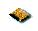
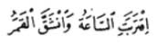
“Saat
(kýyamet vakti) yakýnlaþtý ve ay yarýldý.„
(Kamer
Suresi, 1)
"Þakka" kelimesi Arapça'da "ikiye yarýlma, ayrýlma" manasýndan baþka "çizilme, kabartma, topraðý sürme, topraðýn kazýlmasý" gibi manalarda da kullanýlmaktadýr.
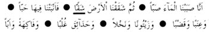
“Biz
þüphesiz, suyu akýttýkça akýttýk.
Sonra
yeri yardýkça yardýk. Böylece onda taneler bitirdik.
Üzümler,
yoncalar. Zeytinler, hurmalar. Boylarý birbiriyle yarýþan ve içiçe girmiþ
aðaçlý bahçeler. Meyveler ve otlaklýklar.„
(Abese
Suresi, 25 - 31)
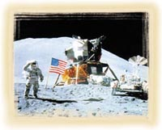
Görüldüðü
gibi bu ayette "þakka" kelimesi "ikiye yarýlma, ayrýlma" manasýnda deðil,
"Topraðýn yarýlýp, çeþitli ekinlerin bitmesi" manasýnda kullanýlmýþtýr.
"þakka" kelimesi bu þekilde deðerlendirildiðinde (Kamer Suresi, 1. ayetinde
geçen) "Ay'ýn yarýlmasý" anlamý yanýnda, ayný zamanda 1969 yýlýnda Ay'a
çýkma olayýnda Ay topraðý üzerinde yapýlan faaliyetler de anlaþýlýr. (En
doðrusunu Allah bilir) Nitekim bu konuda çok önemli bir iþaret daha vardýr.
Kamer Suresi'nde geçen bu ayetin bazý kelimelerinin ebcedi bizlere 1969
rakamýný vermektedir.
| ...Saat
ve ay yarýldý...
HÝCRÝ: 1390 MÝLADÝ: 1969 |
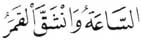 |
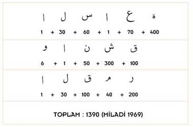
1969'da
Amerikalý astronotlar Ay üzerinde incelemeler yapmýþ, Ay'ýn topraðý çeþitli
aletlerle kazýlmýþ, yarýlmýþ ve örnek alýnarak Dünya'ya getirilmiþtir.
KURAN’DA 19 MUCÝZESÝ
Kuran'ýn matematiksel mucizesinin bir baþka yönü ise 19 sayýsýnýn, ayetlerin içine þifresel bir biçimde yerleþtirilmiþ olmasýdýr. Müddessir Suresi'nin 30. ayetinde dikkat çekilen bu sayý, Kuran'ýn bazý yerlerinde þifrelenmiþtir. Bunun örneklerini þöyle sayabiliriz:
Besmele 19 harftir.
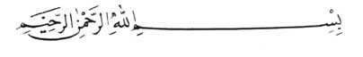
|
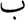 |
1. harf | 8. harf | 15. harf | ||
|
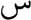 |
2. harf | 9. harf | 16. harf | ||
| 3. harf | 10. harf | 17. harf | |||
| 4. harf | 11. harf | 18. harf | |||
| 5. harf | 12. harf | 19. harf | |||
| 6. harf | 13. harf | ||||
|
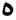 |
7. harf | 14. harf |
Kuran 114 (19x6) sureden oluþur.
Ýlk vahyolan sure (96. sure) sondan 19. suredir.
Kuran'ýn
ilk vayhedilen ayetleri 96. surenin ilk 5 ayetidir ve bu ayetlerin toplam
kelime sayýsý 19'dur.
|
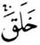 |
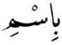 |
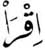 |
||
| 5. kelime | 4. kelime | 3. kelime | 2. kelime | 1. kelime |
|
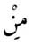 |
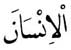 |
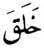 |
||
| 9. kelime | 8. kelime | 7. kelime | 6. kelime | |
|
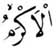 |
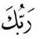 |
|||
| 12. kelime | 11. kelime | 10. kelime | ||
|
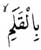 |
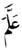 |
|||
| 15. kelime | 14. kelime | 13. kelime | ||
|
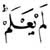 |
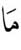 |
|||
| 19. kelime | 18. kelime | 17. kelime | 16. kelime |
Görüldüðü gibi ilk 5 ayet toplam 19 kelimeden oluþmaktadýr. Arada geçen "" harftir, kelime deðildir. "" harfleri de ayný þekilde sayýma dahil edilmemiþtir.
Vahyedilen ilk sure (Alak Suresi) 19 ayete sahiptir.
Son
vahyedilen sure olan Nasr, toplam 19 kelimeden oluþur.
|
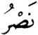 |
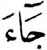 |
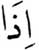 |
||
| 5. kelime | 4. kelime | 3. kelime | 2. kelime | 1. kelime |
|
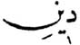 |
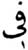 |
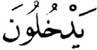 |
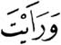 |
|
| 10. kelime | 9. kelime | 8. kelime | 7. kelime | 6. kelime |
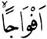 |
||||
| 12. kelime | 11. kelime | |||
|
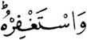 |
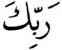 |
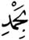 |
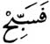 |
|
| 16. kelime | 15. kelime | 14. kelime | 13. kelime | |
|
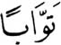 |
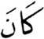 |
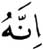 |
||
| 19. kelime | 18. kelime | 17. kelime |
Ayrýca bu surenin Allah'ýn yardýmýndan söz eden ilk ayeti de 19 harftir.
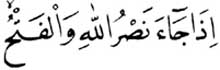
| 1. harf |
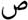 |
8. harf | 15. harf | ||
| 2. harf | 9. harf | 16. harf | |||
| 3. harf | 10. harf |
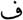 |
17. harf | ||
|
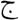 |
4. harf | 11. harf |
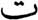 |
18. harf | |
| 5. harf | 12. harf | 19. harf | |||
|
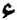 |
6. harf | 13. harf | |||
| 7. harf |
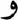 |
14. harf |
Kuran'da 114 (19x6) besmele bulunur. Bu da 19'un 6 katýdýr.
Kuran'da 113 sure besmele ile baþlar. Baþýnda besmele bulunmayan tek sure, 9 numaralý Tevbe Suresi'dir. Kuran'da sadece Neml suresinde iki besmele bulunmaktadýr. Bu besmelelerden biri surenin baþýnda diðeri ise 30. ayette yeralýr. Besmele ile baþlamayan Tevbe Suresi'nden itibaren saymaya baþlanýldýðýnda Neml Suresi'nin 19. sýrada yer aldýðý görülecektir.
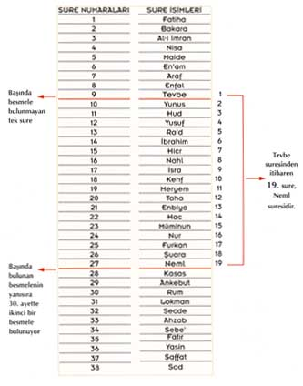
19
sure sonra gelen 27 numaralý Neml Suresi'nin hem baþýnda, hem de 30. ayetinde
besmele
vardýr. Böylece 27. surede iki besmele bulunur. Besmeleleri 114'e
tamamlayan 27. surenin 30. ayetidir.
Sure
ve ayet numaralarýný yani 27 ve 30'u topladýðýmýzda 57 (19x3) sayýsýný
buluruz.
Tevbe
Suresi'nden (9) Neml Suresi'ne (27) kadar olan sure numaralarýnýn toplamý;
(9+10+11+12+13+14+15+16+17+18+19+20+21+22+23+24+25+26+27=)
342'dir. Bu da 19'un 18 katýdýr.
Kuran'da geçen "Allah" kelimesinin toplam sayýsý 2698 (19x142)'dir.
Kuran'da geçen "Rahim" kelimesinin toplam sayýsý 114 (19x6)'tür.
Kuran'da
bahsi geçen 30 farklý rakam vardýr.
| 1 | 7 | 19 | 70 | 1000 |
| 2 | 8 | 20 | 80 | 2000 |
| 3 | 9 | 30 | 99 | 3000 |
| 4 | 10 | 40 | 100 | 5000 |
| 5 | 11 | 50 | 200 | 50000 |
| 6 | 12 | 60 | 300 | 100000 |
Kuran'da geçen tüm bu sayýlarý (tekrarlar dikkate alýnmadan) topladýðýmýzda çýkan sayý 162.146'dýr. Bu da 19'un 8534 katýdýr:
1+2+3+4+5+6+7+8+9+10+11+12+19+20+30+40+50+60+70+80+99+ 100+200+300+1000+2000+3000+5000+50000+100000=162.146 (19x8534)
Kuran'ýn en baþýndan itibaren 19 ayete sahip ilk suresi Ýnfitar Suresi'dir. Bu surenin diðer bir özelliði son kelimesinin Allah olmasýdýr. Bu ayný zamanda Kuran'daki sondan 19. Allah kelimesidir.
Kaf
harfi ile baþlayan 50. surede 57 (19x3) adet kaf harfi vardýr. Baþýnda
kaf harfi bulunan 42. surede yine 57 (19x3) adet kaf harfi bulunur. 50.
surenin 45 ayeti vardýr. Bunlarý toplarsak sonuç 95 (19x5)'tir. 42. surenin
53 ayeti vardýr. Bunlarý toplarsak 42+53 yine 95 (19x5)'tir.
| 50. Sure | 57 (19x3) Kaf harfi | |
| 42. Sure | 57 (19x3) Kaf harfi | |
| 50. Surede | 45 ayet | 50+45=95 (19x5) |
| 42. Surede | 53 ayet | 42+53=95 (19x5) |
Kaf Suresi'nin ilk ayetinde Kuran için kullanýlan Mecid kelimesinin ebced deðeri 57 (19x3)'dir. Yukarýda da belirttiðimiz gibi sure içindeki kaf harflerinin toplamý da 57'dir.
Kaf Suresi'ndeki kaf harflerinin geçtiði ayetlerin numarasýný topladýðýmýzda 19'un 42 katý olan 798 sayýsýný elde ederiz. 42 sayýsý ise baþlangýç harfleri arasýnda kaf olan diðer bir surenin numarasýdýr.
Nun harfi sadece 68. surenin baþýnda bulunur. Bu suredeki nun harflerinin toplam sayýsý 133 (19x7)'tür.
Sure
numaralarý 19'un katý olan surelerin ayet sayýlarýný (besmele dahil) topladýðýmýzda:
| SURE NO | AYET SAYISI | |
| 19X1 | 19. Sure | 99 |
| 19X2 | 38. Sure | 89 |
| 19X3 | 57. Sure | 30 |
| 19X4 | 76. Sure | 32 |
| 19X5 | 95. Sure | 9 |
| 19X6 | 114. Sure | 7 |
| TOPLAM | 266 (19X14) |
Bu konudaki diðer tespitler ise þöyledir: Tüm Kuran'da;
Resul (elçi) kelimesi 513 (19x27) kere,
Etiu (itaat ediniz) kelimesi 19 kere,
Rab (tamlama ile kullanýlmayanlar) kelimesi 152 (8x19) kere,
Abd (kul), Abid (kulluk eden kiþi) ve Ýbadet kelimeleri ise toplam 152 (8x19) kere geçmektedir.